|
|
|
Camp-/AFK-Schutz
Wireds:
Auslöser
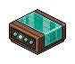
2 x WIRED Auslöser: Effekt wiederholen
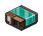
1 x WIRED Auslöser: Habbo tritt auf Gegenstand

1 x WIRED Auslöser: Kollision
Effekt

1 x WIRED Effekt: Zu Möbelstück teleportieren

1 x WIRED Effekt: Möbel bewegen und drehen

1 x WIRED Effekt: Möbelrichtung ändern

1 x WIRED Effekt: Möbelstück nimmt Zustand und Position ein
Bedingung
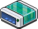
1 x WIRED Bedingung: Habbo auf Möbel
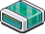
1 x WIRED Bedingung: Ausgewähltes Möbelstück hat anderes auf sich
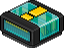
1 x WIRED Negative Bedingung: Hat KEIN Möbel auf sich
Möbel:
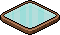
Beliebige Anzahl: Farbfliese
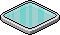
1 x Druckplatte (oder anderer 1 x 1 Boden)
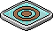
1 x Ringplatte
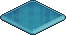
1x FREEZE Boden
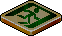
1 x ByeBye Boden (oder anderer 1 x 1 Boden)
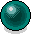
1 x Leuchtball
Allgemein:
Der Camp- oder AFK-Schutz (nicht verwechseln mit Anti-AFK!) wird gebraucht, um User zu kicken, die mit Absicht oder aus Versehen länger einen Weg blockieren, indem sie z. B. auf einer Stelle stehen bleiben. Daher wird es oft auch "Block-Schutz" genannt. Um das Blockieren zu verhindern, müssen die Wireds so eingestellt sein, dass sie alle User kicken, die für eine bestimmte Zeit den Weg versperren.
Einstellung:
Im Prinzip besteht ein AFK-Schutz aus drei Teilen (die jeweilige Definition für die folgenden Wörter sind ausschließlich im Zusammenhang mit dem AFK-Schutz zu betrachten):
1. Timer: Der Timer bestimmt, wie lange ein User auf dem geschützten Bereich stehen darf, bevor er teleportiert wird.
2. Kick: Der User löst indirekt seinen eigenen Teleport aus.
3. Reset: Der Timer startet neu, wenn ein (oder derselbe) User auf den geschützten Bereich kommt.
1. Timer: Der Timer bestimmt, wie lange ein User auf dem geschützten Bereich stehen darf, bevor er teleportiert wird.
2. Kick: Der User löst indirekt seinen eigenen Teleport aus.
3. Reset: Der Timer startet neu, wenn ein (oder derselbe) User auf den geschützten Bereich kommt.
Aufbau:
|
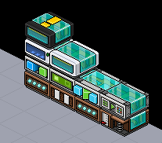 Die Wired-Stapel für AFK-Schutz
|
Die reine Einstellung (Erklärung erfolgt später):
Der 1. Wired-Stapel sorgt dafür, dass der Leuchtball sich pro Sekunde einmal fortbewegt, aber nur dann, wenn ein Habbo auf dem geschützten Bereich steht. Die Bewegung stoppt, sobald der Leuchtball auf der Ringplatte liegt.
Die reine Einstellung (Erklärung erfolgt später):
Der 1. Wired-Stapel sorgt dafür, dass der Leuchtball sich pro Sekunde einmal fortbewegt, aber nur dann, wenn ein Habbo auf dem geschützten Bereich steht. Die Bewegung stoppt, sobald der Leuchtball auf der Ringplatte liegt.
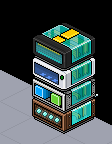
1. Wired-Stapel bewegt Leuchtball bis Ringplatte, wenn User auf geschütztem Bereich
Effekt wiederholen wird auf 1 s gestellt.
Möbel bewegen und drehen fixiert den Leuchtball. Unter "Möbel bewegen:" wird die Pfeilrichtung ausgewählt, die zur Ringplatte führt. Drehung und Effektzeit bleiben unberührt.
Habbo auf Möbel Bedingung fixiert die Druckplatte, welche der geschützte Bereich ist.
Habbo auf Möbel Bedingung fixiert die Druckplatte, welche der geschützte Bereich ist.
Die Negativbedingung "Hat KEIN Möbel auf sich" (Kurz: Kein-Möbel Bedingung) fixiert die Ringplatte. Die blau markierte stelle im unterem Bild (Links) zeigt, welcher Punkt ausgewählt werden muss (in diesem Fall ist es egal, welchen Punkt man wählt).
Der 2. Wired-Stapel teleportiert den User, der mit dem FREEZE Boden kollidiert. Dafür muss der User auf der Druckplatte stehen. Erst, wenn sich auf der Ringplatte ein Möbel (hier ist es der Leuchtball) befindet, dann ist der Teleport aktiv.
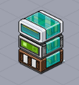
2. Wired-Stapel teleportiert User, wenn Leuchtball Ringplatte erreicht
Kollision-Auslöser ist immer aktiv, theoretisch muss nicht einmal auf "Bereit" geklickt werden.
Das Teleport-Wired fixiert den ByeBye Boden mit 0 s Effektzeit.
Möbel auf Möbel Bedingung (oder, wenn ihr den vollen Namen lesen wollt: WIRED Bedingung: Ausgewähltes Möbelstück hat anderes auf sich) fixiert Ringplatte. Oberer Punkt (blau markiert) ist ausgewählt, aber es kann in unserer Einstellung auch der untere Punkt sein.
Der 3. Wired-Stapel verursacht eine Kollision mit dem User, der auf der Druckplatte steht und dem FREEZE Boden. Die Kollision wird alle 0,5 s verursacht.
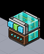
3. Wired-Stapel verursacht jede 0,5 s eine Kollision
Effekt wiederholen wird auf 0,5 s gesetzt.
Richtung ändern Wired fixiert FREEZE Boden (Effektzeit 0 s). Oben wird die Pfeilrichtung ausgewählt, die zur Druckplatte zeigt. Darunter wird "Wait" angeklickt.
Der 4. Wired-Stapel positioniert den Leuchtball auf die 1. Fliese zurück, wenn jemand auf die Druckplatte tritt.
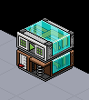
Der 4. Wired-Stapel setzt den Timer zurück, wenn jemand auf die Druckplatte tritt
Tritt-auf Wired fixiert die Druckplatte.
Das Posi-Wired fixiert den Leuchtball auf der 1. Fliese (Leuchtball muss dort stehen beim Speichern!). Der 3. Haken wird wie in folgendem Bild gezeigt (blau) gesetzt. Effektzeit bleibt auf 0 s.
Das Ergebnis sieht so aus:
Erklärung/Hintergrund zur Einstellung:
Der Leuchtball stellt den Timer dar. Er wird benötigt, um die Zeit festzulegen, ab wann ein User gekickt werden soll. Effekt wiederholen sollte dabei so niedrig wie möglich eingestellt sein (0,5/1 s), sonst schwankt die Zeit und ist nicht immer gleich lang (siehe "Hast du gewusst?"). Letztendlich wird die Zeit dadurch definiert, wie lange der Leuchtball bis zur Ringplatte benötigt. Möchte man eine andere Zeit einstellen, braucht man nur die Ringplatte weiter weg/näher dran zu bewegen, ohne etwas am Wired ändern zu müssen. Die Farbfliesen braucht man eigentlich gar nicht, sie zeigen nur den Weg an.
Der FREEZE Boden wurde gewählt, weil dieser nicht verrutscht, wenn Richtung ändern Wired diesen ständig bewegen würde. Er wird so festgehalten, daher wird in Richtung ändern auch "Wait" zur Sicherheit ausgewählt. Da der User nur rumstehen würde beim Blockieren, kann kein Auslöser dies erkennen. Deshalb zwingt man den User dazu, indem er unbemerkt mit dem FREEZE Boden kollidiert. Dieser berührt den User und der Auslöser Kollision erkennt diese Berührung und welcher Habbo das war. Damit wird der Auslöser den Teleport-Effekt ausführen.
Habbo Beta/Unity:
Hast du gewusst?
Warum sollte Effekt wiederholen bei höherer Zeit-Einstellung schwanken, wenn dies an sich doch ein sehr zuverlässiger Timer beinhaltet?
Die Schwankung bezieht sich nicht auf den Auslöser an sich, denn dieser ist wirklich sehr genau. Das Problem ist, wenn Effekt wiederholen beim ersten Mal auslöst, sobald der Leuchtball auf der 1. Fliese ist (also beim Start), dann ist es Zufall, an welcher Zeit sich der Auslöser bereits befindet. Denn der Auslöser hält nicht einfach an. Er kommt sozusagen aus dem Rhythmus raus.
Je niedriger die Zeit, desto weniger Schwankungen existieren. Angenommen, man würde 10 s einstellen und es gäbe nur 3 Fliesen (2 Bewegungen), dann würde man von 20 s ausgehen. Aber in Wirklichkeit kann der Timer um 10 s (50 %!) falsch liegen. Bei 2 Bewegungen bleibt es immer auf 50 % (Maximal). Das bedeutet je länger der Weg, desto niedriger ist die Schwankung. Daher kombiniert man oft beides, um die Zeit so genau wie möglich zu bekommen. Kürzere Auslöse-Zeit, aber einen längeren Weg.
Aber hast du gewusst, dass Effekt wiederholen zurückgesetzt werden kann? Siehe folgendes GIF:
Die Schwankung bezieht sich nicht auf den Auslöser an sich, denn dieser ist wirklich sehr genau. Das Problem ist, wenn Effekt wiederholen beim ersten Mal auslöst, sobald der Leuchtball auf der 1. Fliese ist (also beim Start), dann ist es Zufall, an welcher Zeit sich der Auslöser bereits befindet. Denn der Auslöser hält nicht einfach an. Er kommt sozusagen aus dem Rhythmus raus.
Je niedriger die Zeit, desto weniger Schwankungen existieren. Angenommen, man würde 10 s einstellen und es gäbe nur 3 Fliesen (2 Bewegungen), dann würde man von 20 s ausgehen. Aber in Wirklichkeit kann der Timer um 10 s (50 %!) falsch liegen. Bei 2 Bewegungen bleibt es immer auf 50 % (Maximal). Das bedeutet je länger der Weg, desto niedriger ist die Schwankung. Daher kombiniert man oft beides, um die Zeit so genau wie möglich zu bekommen. Kürzere Auslöse-Zeit, aber einen längeren Weg.
Aber hast du gewusst, dass Effekt wiederholen zurückgesetzt werden kann? Siehe folgendes GIF:
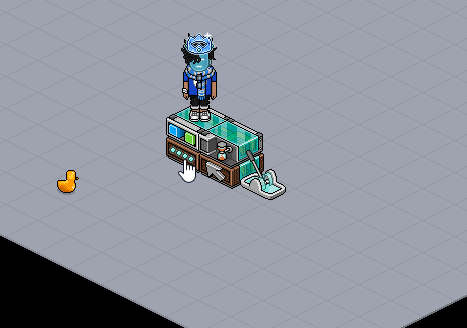
Timer zurücksetzen kann Effekt wiederholen resetten
Mit Timer zurücksetzen kann man also - bei richtiger Einstellung - Schwankungen völlig umgehen. Wieso wurde das Wired dann nicht verwendet? Das liegt daran, dass dieses Wired ausnahmslos jedes Effekt wiederholen, programmierter Zeitpunkt und einige Wireds mehr zurücksetzen würde. Ohne dieses Wired (Timer zurücksetzen) kann man die Methode, die hier gezeigt wurde, in allen Räumen anwenden und braucht sich keine Sorgen zu machen.